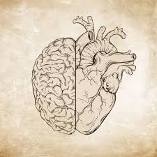

EQ vs IQ

Q: What is Emotional Intelligence?
A: Emotional intelligence or EQ is part of our intelligence that has always been there and has made individuals stand out. EQ is why your classmate who wasn't too good at standart subjects like maths or physics but was always good to talk to and was a overall nice person is now doing very good in life. And while this might seem a bit odd even counterintuitive that someone who isnt so smart is now doing great. That points to something more. And by realizing the importance of EQ the job market is reacting accordingly. Emotional intelligence is you being there present not only physically but also mentally and to the other person, understanding what they are saying in between lines. Reading the other persons emotions analyzing them and communicating while making sure to take their emotions into account.
Q: How is it different to IQ?
A: EQ differs from IQ in all the possible ways. The only similiarity is that it sound similiar. One can be present while the other one is absent. Both can be absent. Both can be present. Both can be learned. EQ stands for your ability to understand and analyze emotions. First of all your own and afterwards the emotions of people around you. If you understand what are the emotions behind ones actions you can relate to that person and find common grounds easier.
Q: Why is it important?
A: It is important because we all want to be in functional environments. And that doesnt only mean whether we know how to do the job and whether we do it. There is also a factor of human. The interaction we have every day is either going to add to the process of getting things done and moving forward or its going to slow it down. That is from the viewpoint of work environment. But from personal perspective it is going to make you better with your family and friends. You will be someone to whom they can speak, share their experiences and thoughts just because you are aware of them like in full sense of this word.